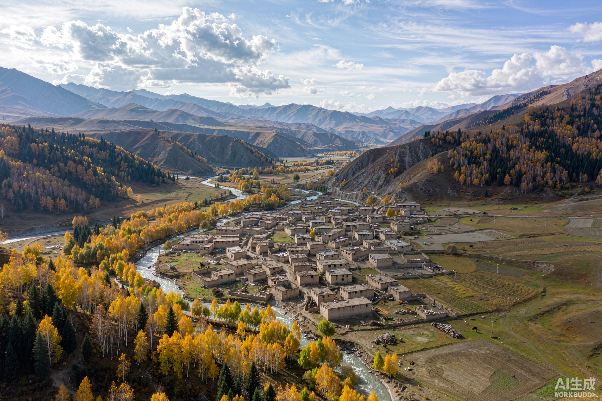
拉脊山下 · 河湟谷地 · 一座活着的明清古村落
在青海省西宁市湟中区土门关乡，群山环抱的峡谷深处，藏着一座坐北朝南的古老村庄。夯土庄廓、明代堡墙、三百年水磨、二百年秦腔——这里是贾尔藏，被时光温柔以待的乡愁之地。
贾尔藏村隶属青海省西宁市湟中区土门关乡，地处拉脊山西麓的峡谷地带，是土门关乡面积最大、人口最多的村庄，也是全乡唯一有藏族群众居住的村庄，素有「青海九寨沟」「小塔尔寺」之誉。
「香沟河与直沟河在村中汇流，南面原始白桦林，是村庄天然的绿色屏风。」
村庄四面环山，坐北朝南，呈狭长状随香沟的流向蜿蜒展开。正北靠上岭，正东临关跃山，东南有岩岗岭，西南有直沟岭，村庄坐落于尖石山（阿米赞杰神山）脚下。据当地人的说法，若从空中俯瞰，连绵山脉恰似一只展翅西飞的凤凰，而贾尔藏村正落于她舒展的翅膀之上。
「贾尔藏」村中汉族居民多为明代自南京等地迁徙而来的移民后裔，与世居此地的藏族群众杂居共生——全村藏族占比约11%，汉、藏、回多民族聚居，中原官话西宁话与藏语在村中通行。中原的农耕文明与河湟本土文化在此交融，全村汇聚了整整一百个姓氏，是各民族交往交流交融的活态见证。村内传统建筑占比达85%，夯土墙体、木质大门，淡黄色是这座村落亘古不变的底色。
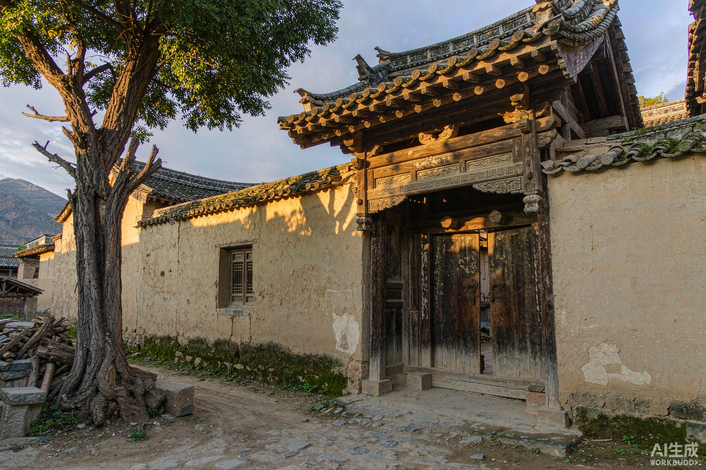
青海省 西宁市 湟中区 土门关乡
东经101°42′ 北纬36°24′
汉、藏、回聚居（藏族约11%）
中原官话西宁话 · 藏语
811603（湟中区通用811600）
0971（西宁）
630122201211
220（村庄）· 青A
「据《西宁府新志》载，明时为申中十三族的贾尔藏族居牧得名。」 —— 清代《西宁府新志》，贾尔藏村地名记载
「贾尔藏」。明代，这一带是塔尔寺「申中十三族」之一的贾尔藏族驻牧之地，村庄因此得名。藏文史料称申中族为「zhingskyong」，意为「护佑田地」，其中的「zhingskyong rgyra rtsang sde ba」正是今日的贾尔藏村——这里是历史上申中族的核心属地。
村中的贾尔藏寺在藏语中称「贾尔藏静房」，属藏传佛教格鲁派寺院，村人习称「尕寺儿」，素有「小塔尔寺」之称，可见藏文化在这片土地上扎根之深。
村名自形成后历代沿用：1949年建政时设贾尔藏村，1958年人民公社化时改称贾尔藏大队，1984年政社分设时复称贾尔藏村村民委员会，名称沿用至今。
「前藏后藏，好不过贾尔藏。」—— 湟中宗喀地区流传的民间俗语
贾尔藏村地处黄土高原与青藏高原过渡地带的拉脊山西麓。山、水、林、土，共同塑造了这座「青海九寨沟」的底色。
村庄所在的拉脊山是祁连山系东段支脉，藏语称「贡毛拉」，为湟中区与贵德县的界山，也是黄土高原与青藏高原的地理分界线。山体地层主要由中生代侏罗纪至新生代第三纪沉积的红色岩系组成。
属大陆性高原气候：春季干旱多风，夏季凉爽，秋季短暂，冬季漫长，气候垂直变化明显。夏无酷暑，是西宁近郊避暑休闲的好去处。
村庄地处小南川河流域。小南川河发源于拉脊山脉尖石山南侧，干流自西南流向东北，上段称香沟；支流直沟正是在贾尔藏汇入干流。蜿蜒的香沟峡与笔直的直沟峡合称「金银沟」，环绕村庄，是村庄生产生活与自然景观的水源命脉。
村庄南面分布着约400公顷（900亩）的原始白桦林，桦树与白杨交织，宛如天然绿色屏风；村东南山坡另有被村民唤作「占林」的森林，占地130余公顷，以天然白桦为主，间生柠条、缠条等灌木，林中四棵高大云杉尤为珍奇。林间还生长着多种中藏药材。
夏季绿草如茵、野花遍地；秋季麦浪翻滚、油菜金黄；冬春银装素裹。
村域土壤以黄土壤、栗钙土为主，适宜青稞、油菜、马铃薯等耐寒旱作物生长——贾尔藏村正处于这一地带。
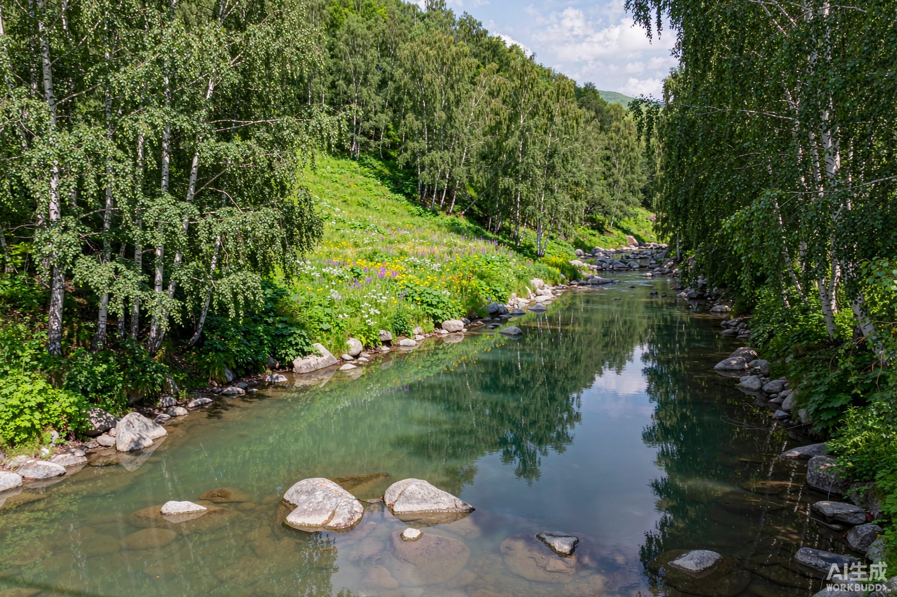
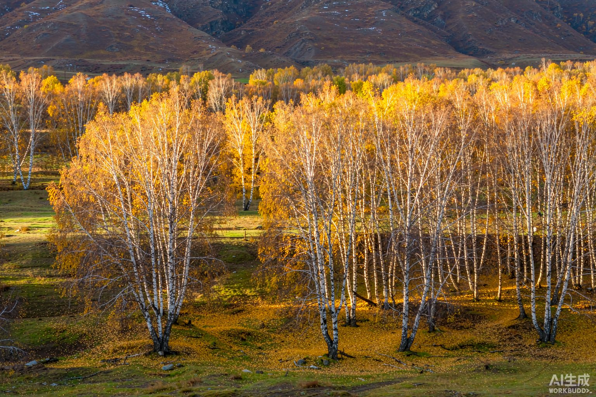
「这里有山有水有林木，贾尔藏可以说是一个能入画的村落。」 —— 郭成良《贾尔藏物事》
依托原生态的山水与深厚的文化底蕴，贾尔藏村走出了一条「保护中发展」的乡村振兴之路。
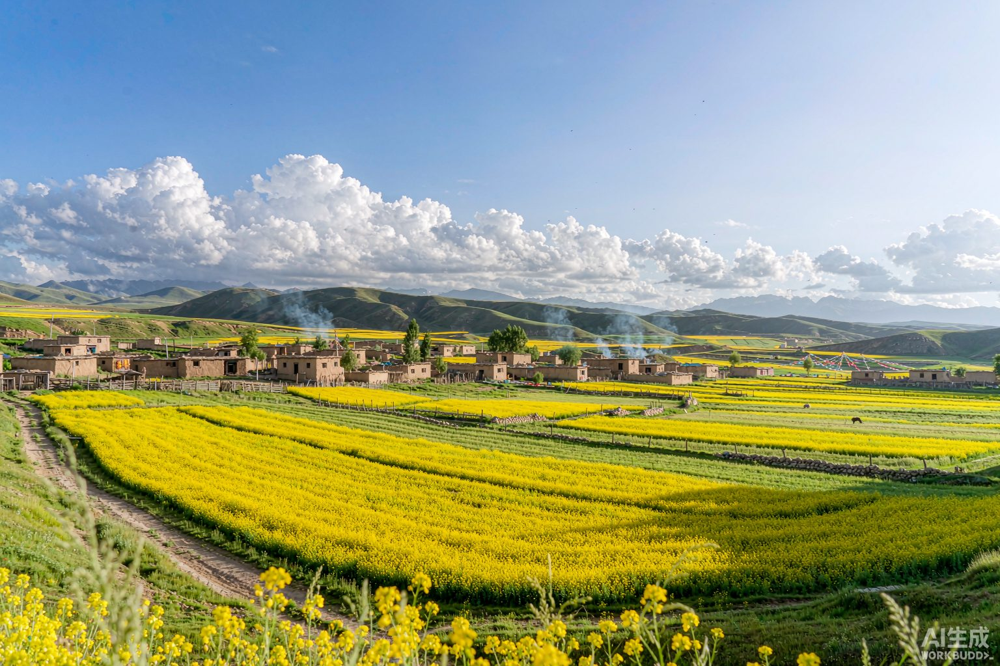
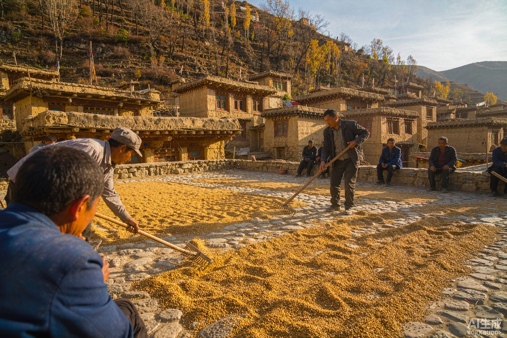
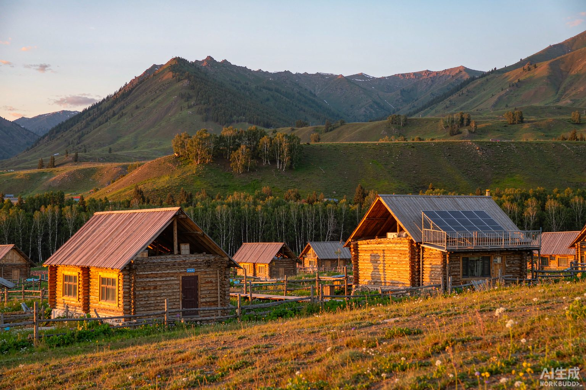
从明代居牧到清代的庙宇与戏班，从民国大院到新时代的传统村落，贾尔藏的历史，写在每一段夯土墙上。
据《西宁府新志》记载，此地为塔尔寺申中十三族的贾尔藏族驻牧之所，村名由此而来。此后汉族移民陆续自南京等地迁入，带来中原农耕文明与建筑技艺。
为保障村庄安全，先民修筑贾尔藏堡。堡墙下宽上窄、高近4米，是村庄最原始的外墙。
村中修建关帝庙，香火延续至今，是汉文化扎根藏乡的见证。
据《青海志·戏曲卷》记载，贾尔藏剧社于清道光年间为祈求风调雨顺、五谷丰登而建立，师承西宁秦剧社。
战乱将至，村人连夜将新置办的戏箱秘密埋入地下。此后近百年间，贾尔藏人始终惦记并寻找这只戏箱，却始终没有找到它的下落——这段传说至今仍在村中流传。
贾尔藏村购入两副八箱戏箱，当年的卖箱契约与戏衣实物清单留存至今，十余件清代蟒靠戏衣仍色泽鲜明。
明清至民国，村中陆续建成七座大院。其中修建于民国时期的聂家大院，门窗雕花精妙、房内彩绘如生，完整保留了传统民居的格局。
贾尔藏堡由国务院公布为全国重点文物保护单位。现存三段城墙，既是文物，也仍是村民日常使用的院墙——古建筑中「大家」与「小家」的奇妙共生。
贾尔藏村入选中国传统村落名录，从此「名声在外」，传统建筑保护与文旅发展翻开新篇。
旅游公路通到村里，柏油路直达村口，农家乐与网红小木屋相继出现，详细历程见「经济发展」。
青海省人民政府公布第一批省级历史文化名镇名村，贾尔藏村位列33个省级历史文化名村之首。
「乡潮青春力·湟中趣玩集」落地贾尔藏村，融合文旅、商业与体验，首日吸引游客1万余人次，为传统村落注入青春活力。
西宁市文联等单位在贾尔藏村举办濒危传统剧目挖掘项目——湟中秦腔培训班，挖掘整理《断桥》《火焰驹》等特色剧目，让二百年秦腔焕新声。
村中的每一处古迹都不是标本：堡墙仍是院墙，水磨仍在转动，大院里陈列着村民自愿捐出的老物件。
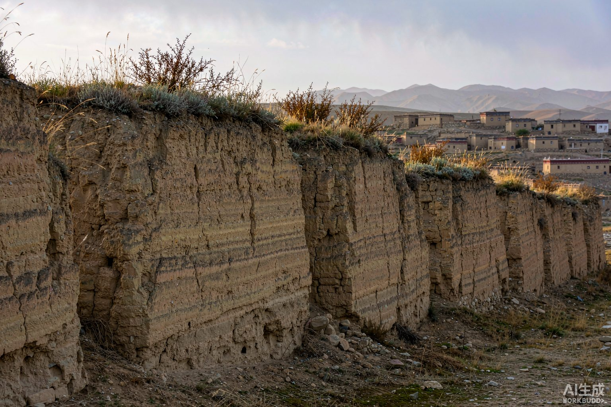
始建于明末的村庄防御堡垒，墙体高近4米、下宽上窄，立面生长着岁月的植被。现存三段城墙，至今仍与村民院墙融为一体，是贾尔藏团结和谐的象征。
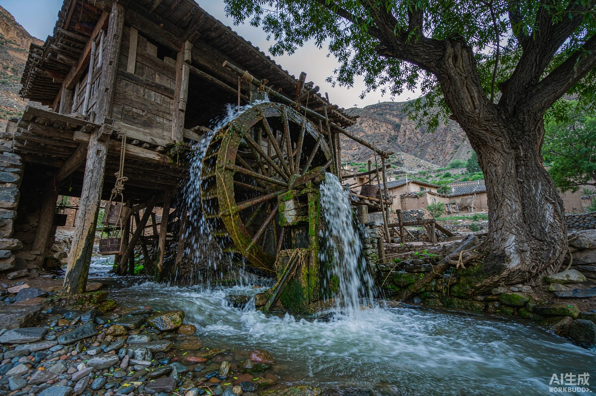
百年古树掩映下，木质水磨坊悬空建于溪流之上，引香沟溪水驱动木轮带动石磨，昼夜不停。旧时全村有12盘水磨，如今仅存一盘，仍有专人守护、依然在用。
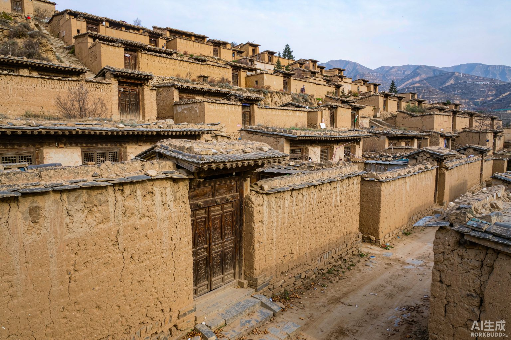
村中现存明清时期建设的七座大院，桑家大院、聂家大院、余家大院受到重点保护。聂家大院外院已流转为村集体所有，改建为贾尔藏村文史遗产展览馆，陈列村民捐赠的老物件。
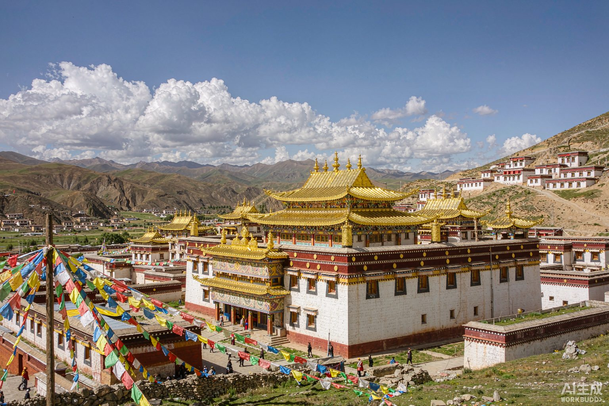
藏语称「贾尔藏静房」，属藏传佛教格鲁派寺院，村人习称「尕寺儿」。因与塔尔寺及宗喀巴诞生地的深厚渊源，素有「小塔尔寺」之称，是藏文化扎根这片土地的地标。
源自陕西的秦腔在高原藏乡扎根数百年，融合出独具河湟特色的「湟中秦腔」。每逢节庆，藏、汉、回各族乡亲齐聚戏台之下——戏声里裹着各族人的笑声。
每年正月，贾尔藏的戏台上灯火通明、桑烟袅袅。涂着浓厚油彩的演员着艳丽戏服，把高亢的秦腔「吼」向天际；台下做惯了农活的庄稼汉或坐或站，痴痴地看——在贾尔藏，这叫「唱大戏」，整个河湟地区都很有名。如今村里业余秦腔剧团有上百位演员，百个姓氏的村民轮番上台。
八卦亭戏台，秦腔初登贾尔藏
改建丁字形戏台
由藏族村支书主持修建月宫挑头戏楼
汉、藏、回各族乡亲捐资建成配备LED屏的文化大舞台
贾尔藏村秦剧团珍藏的清代秦腔抄存本，是研究西北戏曲史的珍贵文献。2026年7月，湟中秦腔培训班在村中开班，由资深演员陈栓昌、张变秋授课，三十余名学员老带新，重点复排《断桥》《火焰驹》等特色剧目。
点击任意图片可放大浏览，左右方向键可切换。
方志、学术文献与文学作品中的村庄身影，是贾尔藏走向更广阔世界的注脚。
记载明代此地「为申中十三族的贾尔藏族居牧」，是「贾尔藏」地名最早的文献出处之一。
地方志书记载：贾尔藏剧社于清道光年间（1821—1851）建立，师承西宁秦剧社，是贾尔藏秦腔二百年传承的文献源头。
青海省文物志编辑委员会编纂，系统记录湟中古遗址、古城堡、古墓葬与古建筑，是了解贾尔藏堡所在区域文物脉络的重要史料。
水文专业文献，系统分析小南川河径流、泥沙与洪水特性，本站「水系与水文」版块数据的学术来源。
观山览水、吃一顿农家饭、听一场秦腔——这里是西宁人周末就出发的诗与远方。